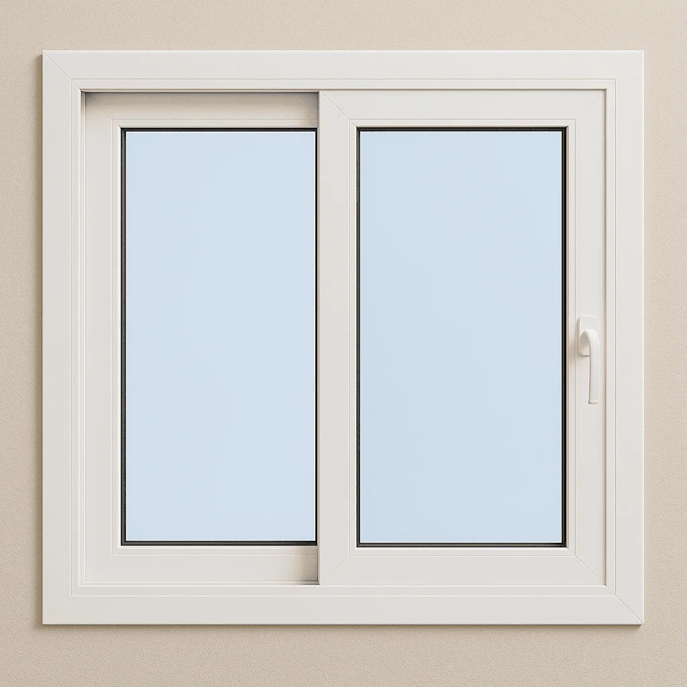
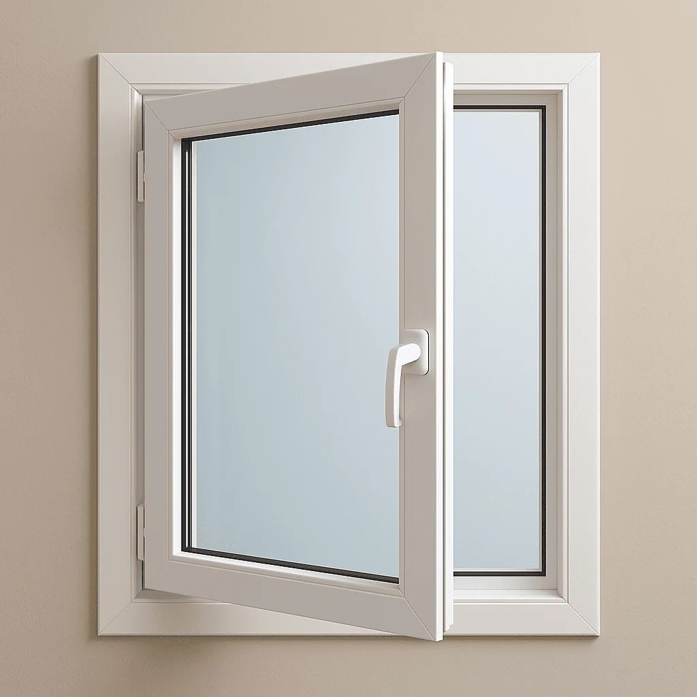
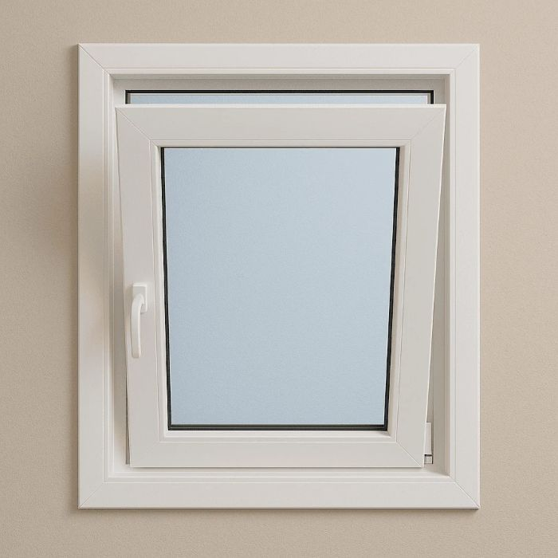
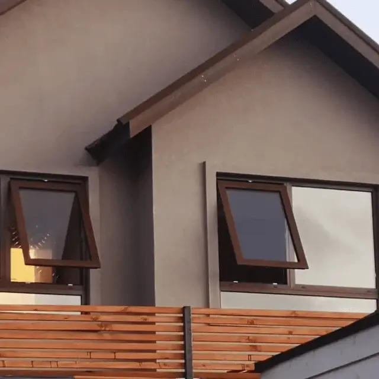
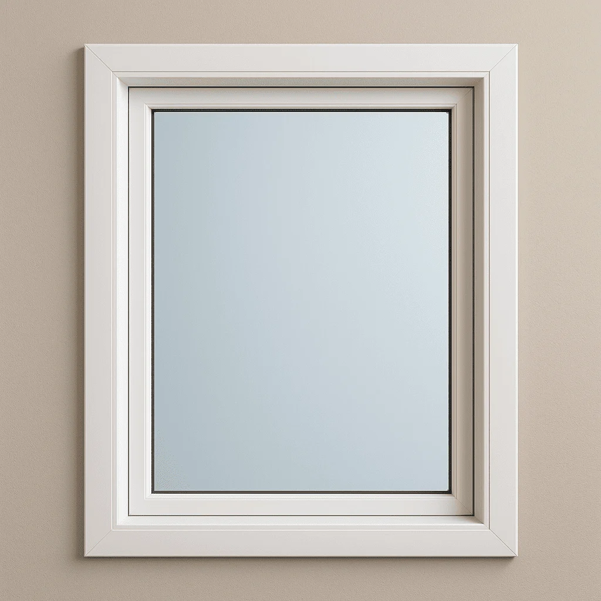

Rendimiento de Nuestras Ventanas
Comparativa de cada sistema de apertura según rendimiento termoacústico, seguridad, estética y más.

Ventana Corrediza
| Rendimiento Termoacústico – 35 pts | 22/35 | El deslizamiento deja leves aberturas que reducen el aislamiento. |
|---|---|---|
| Seguridad – 20 pts | 15/20 | Buen cierre, aunque menos robusto que un sistema abatible. |
| Calidad Visual y Vista – 15 pts | 12/15 | Perfiles delgados para mayor superficie acristalada. |
| Funcionalidad – 15 pts | 14/15 | No invade espacio interior, ideal en lugares reducidos. |
| Estética y Compatibilidad – 15 pts | 14/15 | Diseño contemporáneo adaptable a distintos estilos. |
| Puntaje Total |
| |

Ventana Abatible
| Rendimiento Termoacústico – 35 pts | 32/35 | Cierre perimetral hermético con gomas de sellado. |
|---|---|---|
| Seguridad – 20 pts | 17/20 | Bisagras y herrajes robustos para mayor protección. |
| Calidad Visual y Vista – 15 pts | 13/15 | Equilibrio entre marco y vidrio. |
| Funcionalidad – 15 pts | 13/15 | Requiere espacio para abrir completamente. |
| Estética y Compatibilidad – 15 pts | 14/15 | Aspecto clásico que combina con cualquier diseño. |
| Puntaje Total |
| |

Ventana Oscilobatiente
| Rendimiento Termoacústico – 35 pts | 33/35 | Excelente sellado en ambas posiciones. |
|---|---|---|
| Seguridad – 20 pts | 18/20 | Múltiples puntos de anclaje que dificultan intrusiones. |
| Calidad Visual y Vista – 15 pts | 14/15 | Marco discreto que deja pasar abundante luz. |
| Funcionalidad – 15 pts | 14/15 | Doble apertura para ventilar y limpiar con comodidad. |
| Estética y Compatibilidad – 15 pts | 14/15 | Solución versátil con diseño moderno. |
| Puntaje Total |
| |

Ventana Proyectante
| Rendimiento Termoacústico – 35 pts | 30/35 | Buen sellado, aunque menor que la abatible. |
|---|---|---|
| Seguridad – 20 pts | 16/20 | Apertura hacia fuera con herrajes confiables. |
| Calidad Visual y Vista – 15 pts | 13/15 | Hojas amplias y marco reducido. |
| Funcionalidad – 15 pts | 13/15 | No ocupa espacio interior y permite buena ventilación. |
| Estética y Compatibilidad – 15 pts | 14/15 | Aspecto minimalista fácil de integrar. |
| Puntaje Total |
| |

Ventana Fija
| Rendimiento Termoacústico – 35 pts | 28/35 | Al no tener herrajes, ofrece buen aislamiento. |
|---|---|---|
| Seguridad – 20 pts | 17/20 | No es practicable, lo que incrementa la seguridad. |
| Calidad Visual y Vista – 15 pts | 15/15 | Máxima superficie de vidrio sin interrupciones. |
| Funcionalidad – 15 pts | 7/15 | No permite ventilación ni acceso. |
| Estética y Compatibilidad – 15 pts | 14/15 | Se adapta a todo tipo de fachadas. |
| Puntaje Total |
| |